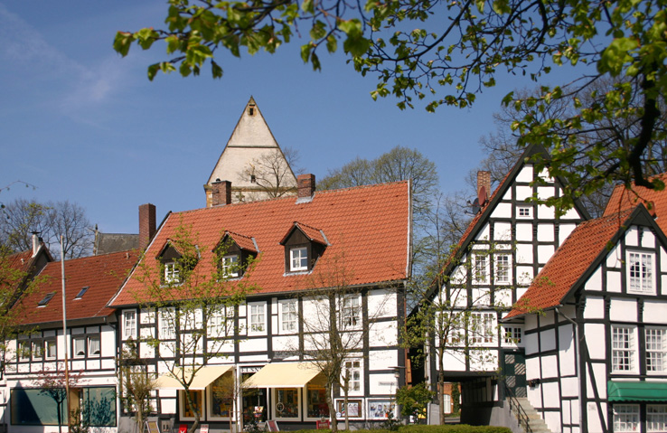
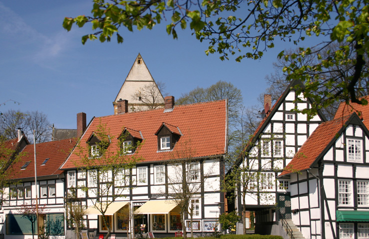

Halle Westfalen
Welcome to Halle Westfalen
Halle Westfalen (i.e. Westphalia) to distinguish it from the larger Halle (Saale), is a town in the German Bundesland of North Rhine-Westphalia and belongs to the district of Gütersloh.
It is situated on the sandy plain of the river Ems on the southern slopes of the Teutoburg Forest, which crosses the town territory from northwest to southeast. This mountain range delimits the eastern part of the Münsterland and the Westphalian Bay and is the drainage divide between the rivers Ems and Weser here. The highest points are the Hengeberg (316 m) and the Eggeberg (312 m). The lowest point, at 70 m, is at the south-western outskirts of the borough. There three streams, the Hessel, Rhedaer Bach and Ruthebach, leave the town's territory, while the Ruthebach joins the Lodenbach. All of the streams have their source in the Teutoburg Forest and ultimately join the River Ems. The territory of Halle is essentially characterized by agriculture, but has also a substantial amount of forest areas, namely the Teutoburg Forest and the Tatenhausen Forest as well as 40 hectares (99 acres) of municipal forest. The 52nd line of latitude crosses the southern part of the town area in its southern part.
The northern part of the town area of Halle is situated in the Teutoburg Forest mountain range, with the town limits running on the ridge in large parts. Towards the south the borough levels off into the sandy plains of the river Ems. Halle is part of the north-eastern rim of the Westphalian Bay, that has approximately the shape of a bowl. Here the stones of the subsoil are steeply erected. They consist of marlstone with a high share of clay, marlstone with a high share of limestone, as well as limestone and marl themselves, but also of sandstone and sandy marl of the Mesozoic era (Cretaceous). These stones lie above a base of folded stones of the Paleozoic era (Devonian, Carboniferous). In the transition area towards the Münsterland the cretaceous layers are increasingly covered by a slim and mostly sandy layer of loose stones from the ice age (Quaternary), that consist of sedimentation of the river Ems and of deposits like ground moraines or meltwater sands. With respect to soil, the Halle territory can be geomorphologically structured into three sections. The soils of the ditches, dells and lowlands in the southwest are filled with groundwater close to the surface. These gley soils are natural locations for grasslands. Peaks and ridges are rising from the lowlands consisting of dune sands und meltwater sands, which are sediments and sedimentary rock of the quaternary.
Top experiences
-
In town
The Protestant parish church is located amidst the tree-lined church square and surrounded by half-timbered buildings, altogether often called "The Heart of Halle". The arched building was originally built single-nave in the 13th century; a square choir and a west tower were added to the southern side aisle in the 15th century. The northern addition dates from 1886. Remnants of Baroque features in the interior could be preserved, among them the sandstone pulpit of 1716. In the northern side aisle there is a gallery balustrade that dates back to 1661. The church was equipped with a new organ in 1992. The church square was Halle's most important graveyard until 1828. To this date a considerable number of half-timbered buildings could be preserved.
The built-up area around the church has an impressive closedness, only few comparable structures are preserved in the area (compare Delbrück, Gütersloh). The oldest building is Kirchplatz No. 3, which was dated dendrochronologically to the year 1512. Kirchplatz No. 11 has a storefront that is carved with fan rosettes, the storefront was used for a new building after the old building to which it originally belonged was broken down. In the nearby Bahnhofstraße there are further eminent half-timbered buildings. The house no. 10 is exceptionally stately, showing a special form of bay windows to the street, that dates back to the 17th century. Kiskerhaus (Kisker House), nowadays used by the folk high school. The former head office of the Kisker distillery consists of an older core building from 1692 that was extended in 1712. It served as residence and office. On the same compound furthermore the Schinkenhaus (Ham House), a plastered stone house with garret roof and a half-timbered gavel to the northwest, the distillery house, built early in the 19th century and with the old distillery in the cellar that can be sightseen to date, and the remise, built as a coach and store house around 1880. The Catholic Church Herz-Jesu was inaugurated on November 14, 1909. The building was donated by Countess Julia Korff-Schmising- Kerßenbrock. In front of the old building of the county court a war memorial can be seen, which was erected in 1898. The inscription reads: Ihren in den siegreichen Feldzügen 1866 und 1870/71 gefallenen Soehnen in Darkbarkeit; Die Kirchengemeinde Halle i./W. 1898 (With gratitude to its sons killed in action in the victorious expeditions of 1866 and 1870/71; The parish of Halle i./W. 1898)
-
Out of town
The moated castle Tatenhausen is situated in the Tatenhausen Forest. The castle was ancestral home to the barons and counts von Korff, called Schmising. It was built in the Weser Renaissance style. The erection of the east wing started in the year 1540, based on foundations from the 14th century. The centre section and the west wing were built in Baroque style in the 18th century. The Baroque style orangery was designed by Johann Conrad Schlaun in 1751. The castle is still inhabited. The surrounding lake is fed by the creek Laibach. The Kaffeemühle ("Burr Mill"; 52° 04′ 09″ N, 8° 22′ 03″ O) is a building in the Teutoburg Forest. It was built by the Hagedorn family, a merchant family from Bremen that worked in Halle.
It is in possession of the town of Halle by way of donation by the families Julius and Florenz Kisker since 1904. The building offers views on Halle as well as the surrounding region to the south. The name of the building has been coined by the public because of its great resemblance to a burr mill. Shortly below the burr mill the Hagedorn Memorial was erected in honour of Hermann Hagedorn on the occasion of his 68th birthday. On a number of places on the slopes of Teutoburg Forest bordered forest graveyards can be found, e.g. at 52° 04′ 11″ N, 8° 22′ 00″ O. Also on the slopes of the Teutoburg Forest a Walther von der Vogelweide-Memorial can be found (52° 04′ 06″ N, 8° 22′ 13″ O). Its erection was encouraged as of 1920 by the Ravensberg Men's Choral Society, despite the known fact that Vogelweide had never visited the region. By its construction the singing club wanted to express its great attachment to Walther von der Vogelweide. The memorial was unveiled in 1930 in Vogelweide's 700th year of death. Since the singing club annually holds its traditional Whitsun Singing at the memorial. The inscription on the memorial reads: Grüß Gott mit hellem Klang / Heil deutschem Wort und Sang; Zur Erinnerung an das 700. Todesjahr Walther's von der Vogelweide / Halle(Westf.) den 29.Juni 1930 / Männer-Gesang-Verein Ravensberg / "Walther von der Vogelweide, wer sein vergäße, tät mir leid!" (Greetings with bright clang / Hail to German word and sang; To commemorate the 700th year of death of Walther von der Vogelweide / Halle(Westf.) June 29, 1930 / Ravensberg Men's Choral Society / "Walther von der Vogelweide, he who would forget him would have my pity!"). The memorial is a station on the cultural path of Teutoburger Wald Laibachweg. Halle was home to coal and iron ore mining for roughly 400 years. In the year 1505 Duke Wilhelm IV. of Jülich-Berg granted rights to his stadtholder Count Philipp II. of Waldeck to erect mines in the County of Ravensberg. The first pit assumedly was in the borderland between Halle and Werther. In the mid-17th century coal digging also took place in Eggeberg. Furthermore, ore was searched near the surface on the hilltop of the Teutoburg Forest. Log wood to support the extension of the pits was available in abundance in the Teutoburg Forest. In the middle of the 18th century coal mining yielded due to high wood prices and difficulties to import less expensive coal. During the mining booms in the 19th century there were as many as 23 coal pits and 24 pits for near-surface ore. All pits were closed down in 1883 due to the growing impact of the Cologne-Minden railway line and the options to import coal cheaper from the Ruhr Area. Due to the Occupation of the Ruhr by French troops in 1923 one drift was reopened for a short period. On a marked hiking trail starting at 52° 04′ 27″ N, 8° 22′ 02″ O with an information panel the hiker goes past some of the old drifts and the pithead building.
-
Parks
Halle has no laid-out parks. Merely the Friedhof I (Cemetery I) near the train station is park-like with large free spaces. Numerous playgrounds, among them those covering a relatively vast area, e.g. the Laibach-playground, are used like parks by the population.
-
Music
In February Halle hosts the super regionally renowned "Haller Bachtage", with choir- and orchestra concerts, chamber and organ concerts being staged during one week. In many cases international celebrities of classical music can be engaged (Peter Schreier, Thomas Quasthoff, Petr Eben a.o.).
-
Museums
Halle has the only "museum for works of childhood and adolescence of important artists" in the world. Namely paintings during adolescence of artists like Paul and Felix Klee, August Macke, Ernst Ludwig Kirchner and Pablo Picasso are in the focus of the museum's work. In the remise of the Kisker House there are regular single and group exhibitions of visual arts with regional reference. Contemporary artwork, sculptures, acrylic, oil and aquarelle paintings and photo arts are presented. In the former leather manufacture Güttgemanns more than 15 local artists and artisans took domicile. They regularly organize joint exhibitions and presentations.
-
Sports
Every year in June Halle hosts the Gerry Weber Open, one of a handful of ATP tournaments in the world played on grass. Tennis professionals use this tournament as a tune-up for Wimbledon. In 2007 the Gerry-Weber-Stadium, which is the 2nd- biggest stadium in the district of Gütersloh, hosted several matches of World Men's Handball Championship. The men's team of "TC Blau-Weiß Halle" have won the German Team Tennis Championships in 1995 and 2006.
Discover the beauty of Halle Westfalen
 
